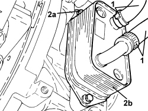
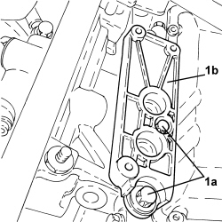

2130A38 AUTOMATIC TRANSMISSION FLUID HEAT EXCHANGER - R + R - INCLUDING LEVEL TOP UP IF NECESSARY
- Path
- Procedures > 21 GEARBOX UNIT > 2130 AUTOMATIC TRANSMISSION WITH DIFFERENTIAL > 2130A AUTOMATIC TRANSMISSION ASSEMBLY > 2130A38 AUTOMATIC TRANSMISSION FLUID HEAT EXCHANGER - R + R - INCLUDING LEVEL TOP UP IF NECESSARY
- Kind
- repair procedure (removal / refitting; the operation number is the code)
- Applies to
- engines: 3.2 JTS; all production periods
- Interactive page
- https://sloeber94.github.io/elrnDB-aBrrSpdr/en/#/946004454
Applies to: engines: 3.2 JTS; all production periods
 Removing
Removing
 Refitting
RefittingOp. 7055B54 UNDER ENGINE PROTECTION/GUARD - R.R.
Op. 0010T20 ENGINE COOLANT - CHANGE
1. Loosen the bands and disconnect the automatic transmission fluid heat exchanger coolant supply and return pipes.
2. Undo the bolts (2a) and remove the automatic transmission fluid heat exchanger (2b).

Applies to: engines: 3.2 JTS; all production periods
1. Undo the bolts (1a) and remove the automatic transmission fluid heat exchanger support (1b).

Applies to: engines: 3.2 JTS; all production periods
Refitting
Removing- Place the automatic transmission fluid heat exchanger mounting in its housing and tighten the bolts to the recommended torque.
- Place the automatic transmission fluid heat exchanger in its housing and tighten the bolts to the recommended torque.
- Connect the automatic transmission fluid heat exchanger coolant supply and return pipes.